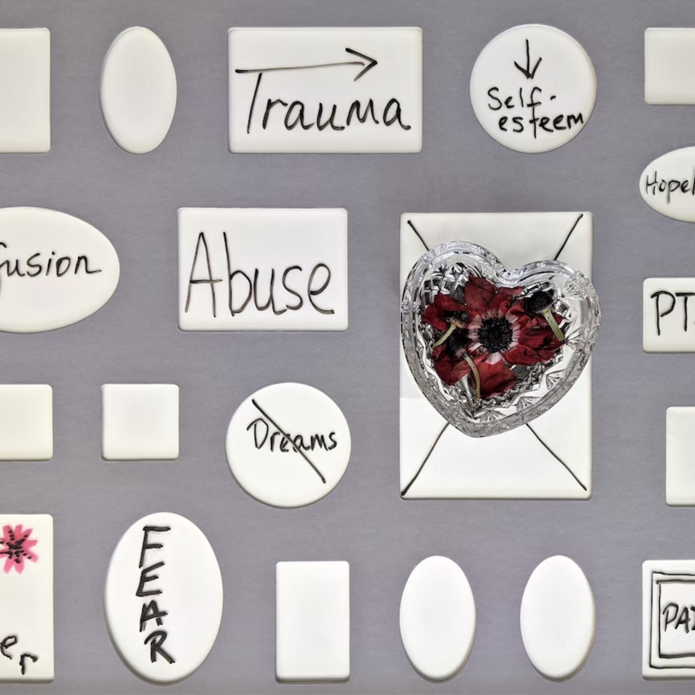

One of the most prevalent neurodevelopmental disorders among children is ADHD.
It frequently persists into maturity and is typically first diagnosed in infancy.
Children with ADHD may struggle to focus, manage impulsive behaviours
(doing without considering the consequences), or be extremely active.
Signs and Symptoms
• Daydream a lot
• Forget or lose things a lot
• Squirm or fidget
• Talk too much
Anxiety
An anxiety disorder is a type of mental health condition.
If you have an anxiety disorder, you may respond to certain things and
situations with fear and dread.
You may also experience physical signs of anxiety, such as a pounding heart.
It’s normal to have some anxiety.
You may feel anxious or nervous if you have to tackle a problem at work,
go to an interview, take a test or make an important decision.
Signs and Symptoms
• Cold or sweaty hands
• Dry mouth
• Feeling panic, fear and uneasiness
• Muscle tension
Bipolar Disorder
Bipolar disorder is a mental health condition that causes extreme
mood swings that include emotional highs (mania or hypomania)
and lows (depression).
When you become depressed, you may feel sad or hopeless and lose interest
or pleasure in most activities. When your mood shifts to mania or
hypomania (less extreme than mania), you may feel euphoric, full of
energy or unusually irritable. These mood swings can affect sleep,
energy, activity, judgment, behavior and the ability to think clearly.
Signs and Symptoms
• Increased energy
• Excitement
• Impulsive behaviour
• Agitation
Depression
Major depressive disorder oo Depression, is a serious medical
condition that frequently affects people's feelings,
thoughts, and behaviours.
It can impair your ability to perform at work and at home
and cause a number of mental and physical issues.
It has numerous triggers and a wide range of potential causes.
A traumatic or stressful life event, such as a death in the family,
a divorce, a sickness, a layoff, or concerns about one's career or finances,
may be the culprit for some people.
Depression frequently results from a combination of many reasons.
Signs and Symptoms
• Continuous low mood or sadness
• Feeling hopeless and helpless
• Having low self-esteem
• Feeling tearful
• Having no interest or motivation in things

PTSD
Post-traumatic stress disorder (PTSD) is a disorder that develops
in some people who have experienced a shocking, scary, or dangerous event.
Fear is a normal emotion both during and after a terrible event.
Fear causes the body to go through a number of split-second
modifications that aid in defending against or avoiding danger.
Flashbacks or dreams may cause individuals with PTSD to relive the
incident, they may experience sadness, fear, or rage, and they
may feel distant or estranged from other people.
Signs and Symptoms
• Vivid flashbacks
• Intrusive thoughts or images
• Nightmares
• Intense distress at real or symbolic reminders of the trauma
• Physical sensations such as pain or sweating